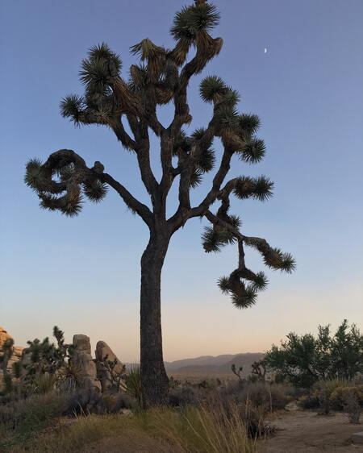
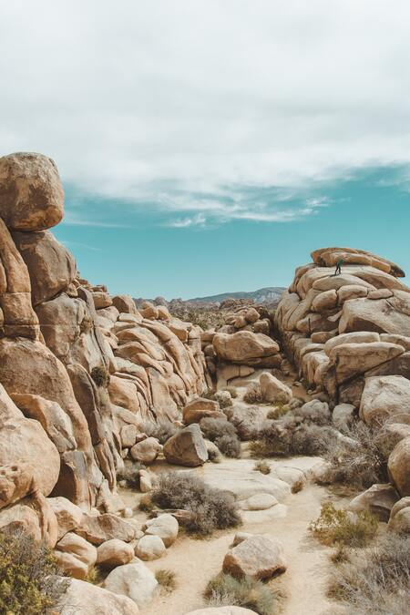

Joshua Tree

Joshua Tree is a relatively new national park. It was created in 1994.
Located in California, Joshua Tree is a combination of two deserts, the Mojave and the Colorado.
| Mojave and Colorado Desert Differences |
| Location | Mojave | Southeast California & Southwestern Nevada |
| Colorado | Southeast California |
| Size | Mojave | Around 30 million Acres |
| Colorado | Around 7 million Acres |
| Number of Rainy Seasons | Mojave | One in Winter |
| Colorado | Two. One in Summer & one in Winter |
Rock Formations

Joshua Tree gets around 3 million visitors per year.
A Joshua Tree is a type of Yucca plant that resembles a tree, hence the name.